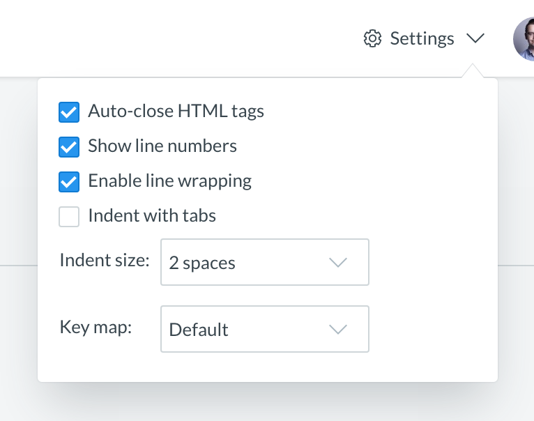

New Editor settings have landed, you can now set a few things like
indentation level, key modes (Sublime Text, VIM, EMACS), line wrapping, hiding line numbers.
Since some fiddlers are not huge fans of automagical things, we're also added the option to disable auto-closing HTML tags.
